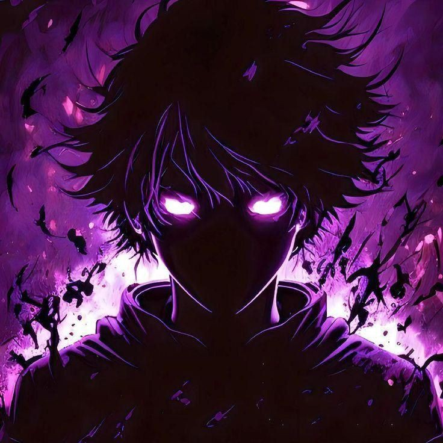

First Latihan Coding Clavin

Jadi beginilah latihannya....
Hai Semua perkenalkan nama saya :
Clavinova Verdinand Wijaya Putra
Jdi saya berlatih coding awal adalah menggunakan Html
Saya dri mts maarif nu 1 ajibarang,dan saya memutuskan untuk melanjutkan sekolah saya di smk maarif nu 1 ajibarang dan mengambil jurusan RPL

Alasan saya masuk rpl yaitu karena saya ingin belajar dan lebih mengasah ilmu di RPL,karena cita - cita saya adalah progamer